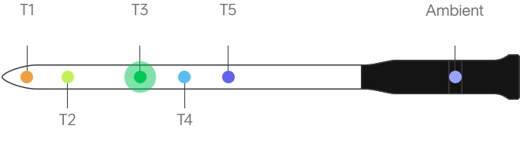
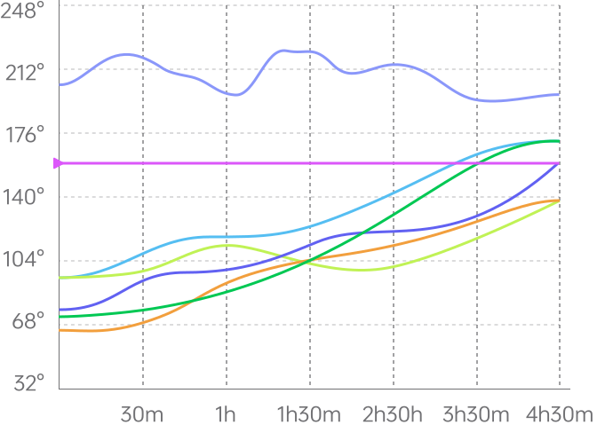

Probe 1
Device Name - MU4A

Connect your base to the Internet to keep track of temperatures.
Cooking
Rib Roast Medium Rare


132.9°F
Target102.5°F
Ambient245.5°F
Remaining45min
Cook Duration1hr 30min